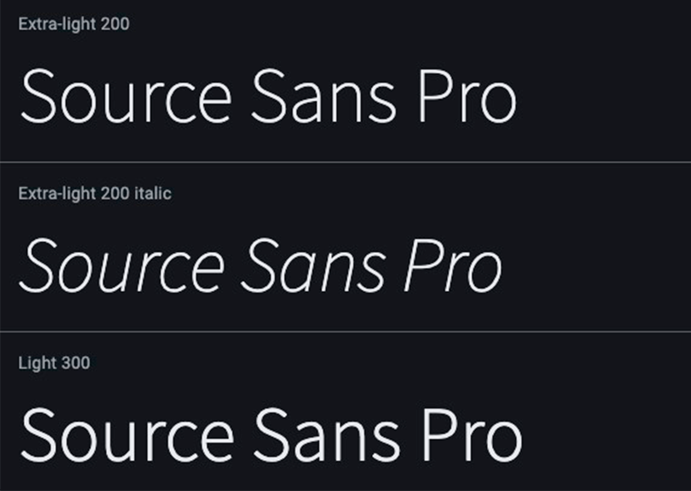
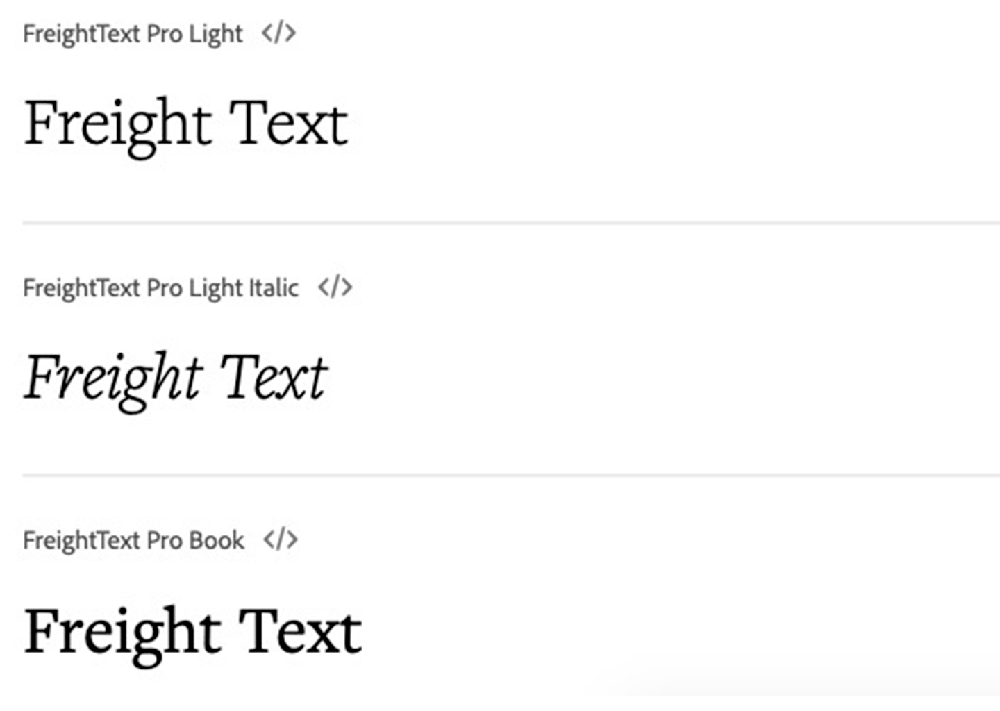
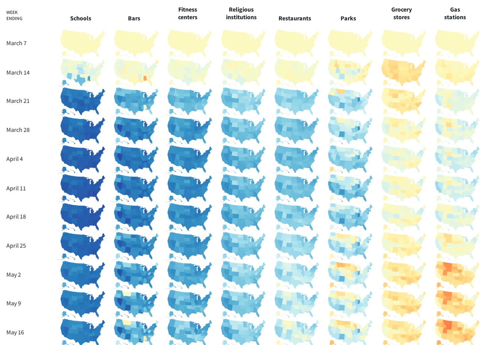
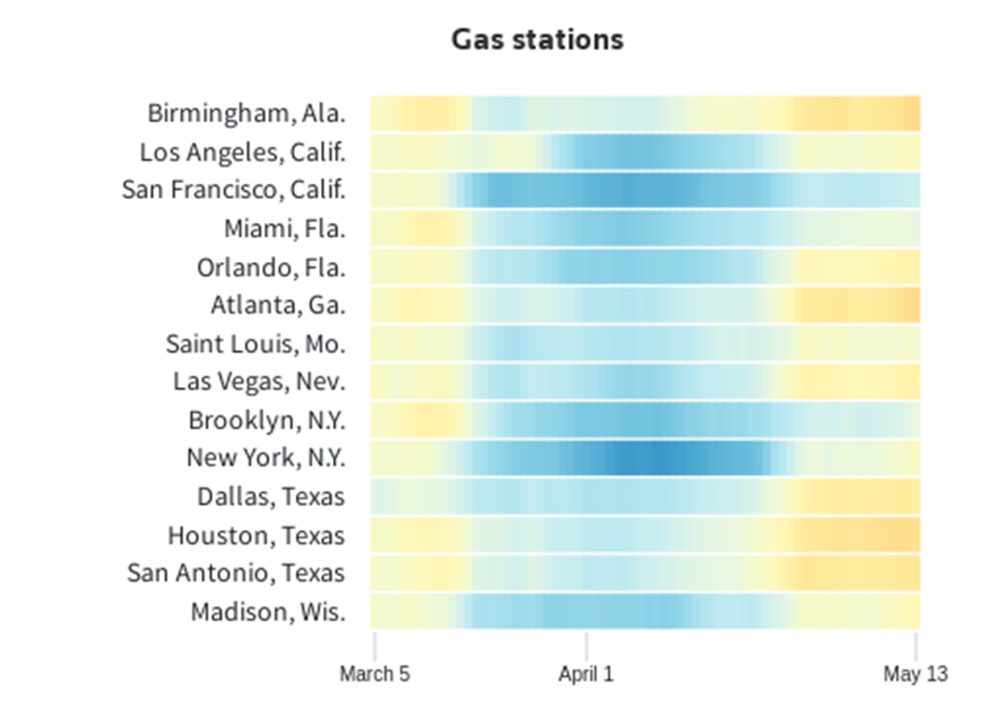
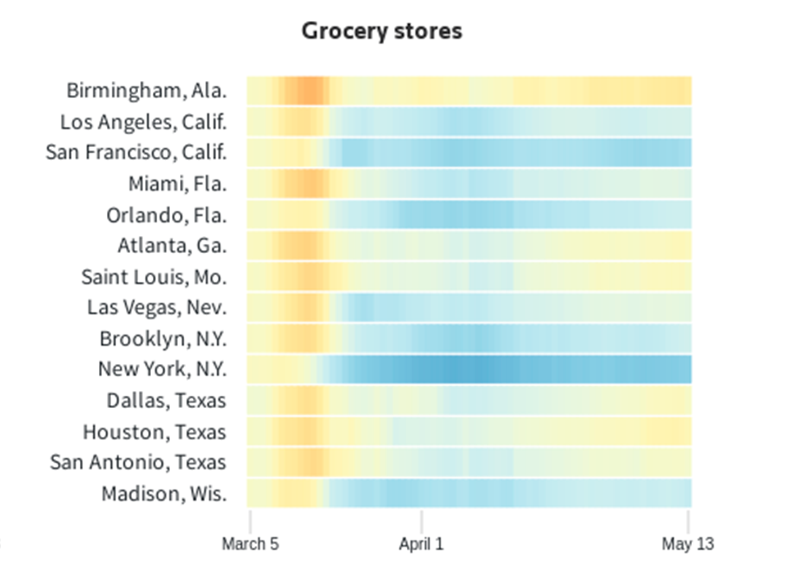
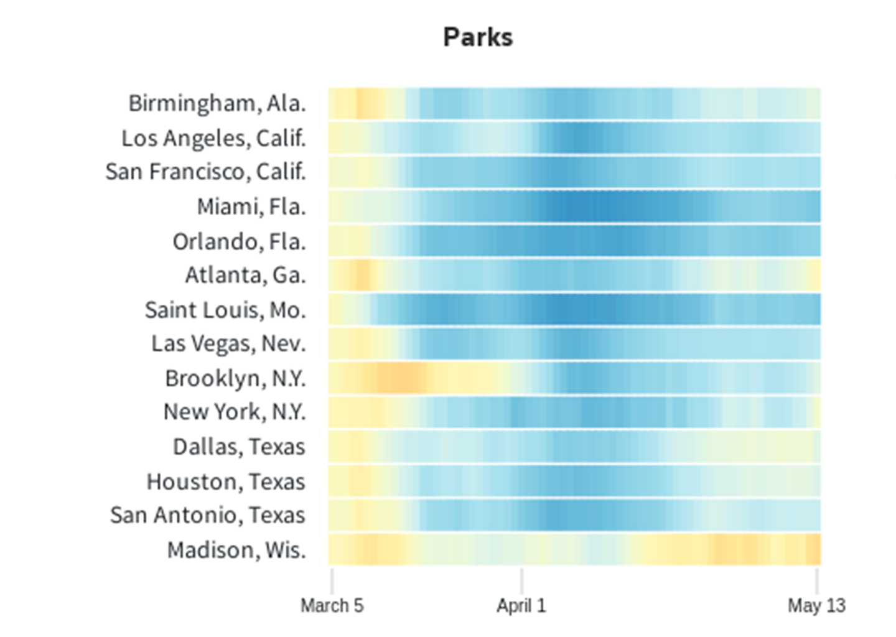
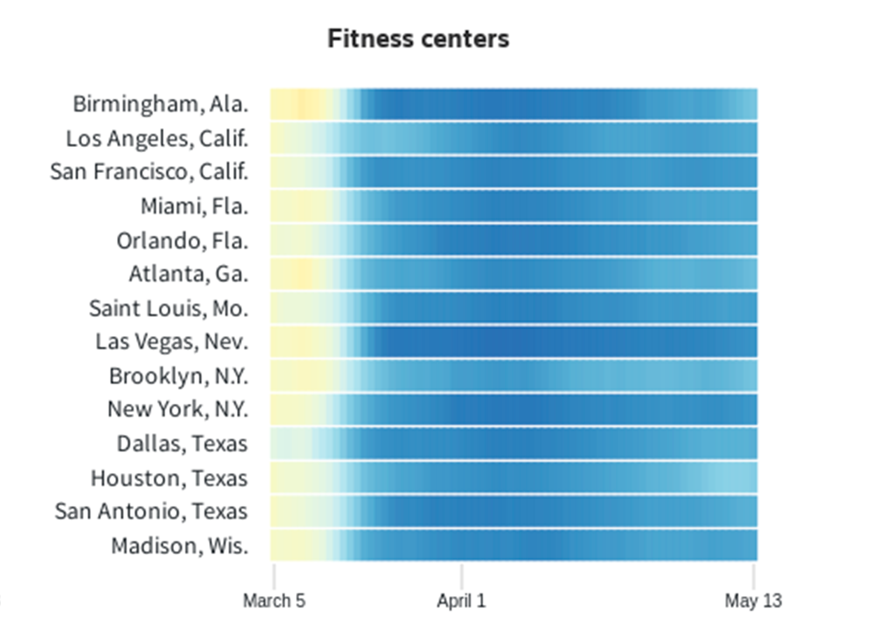
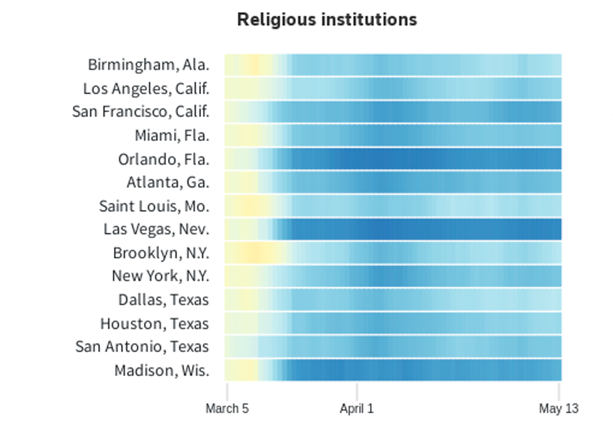

Colores
Estos colores se aplican en la infografía con un contraste de cálido-frío (o de temperatura): La diferencia de temperatura entre colores aumenta el contraste visual. Esta combinación hace que un color cálido rodeado de colores fríos se percibirá aún más cálido, y viceversa.
Tipografías

Source Sans Pro
Source®️ Sans Pro, la primera familia tipográfica de código abierto de Adobe, fue diseñada por Paul D. Hunt. Es un tipo de letra sans serif destinado a funcionar bien en interfaces de usuario.

Freight Text
Diseñado por Joshua Darden. De Phil's Fonts. Phil’s Fonts proviene de uno de los estudios de tipografía fotomecánica más conocidos y respetados de la industria, Phil’s Photo. Seguimos las tradiciones y los estándares establecidos por sus fundadores.
Gráficos

Cambios en el tráfico peatonal- Figurativo

Gas Stations - No figurativo

Grocery Stores - No figurativo

Parks - No figurativo

Fitness Center - No figurativo
